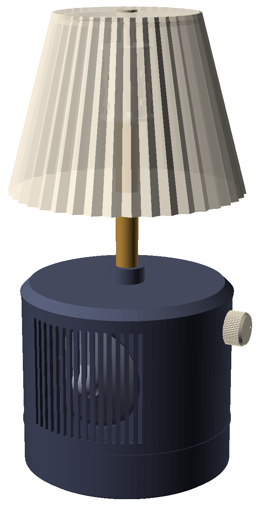
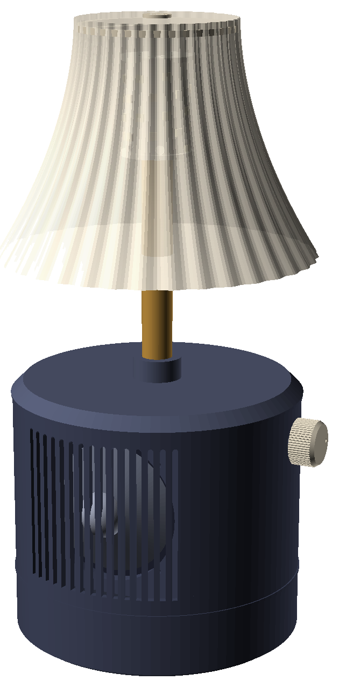
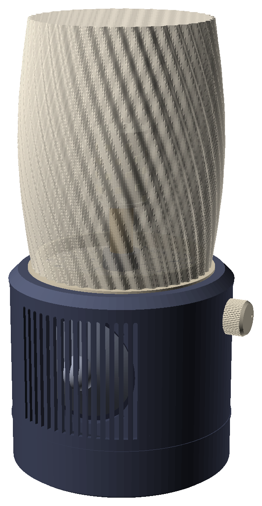
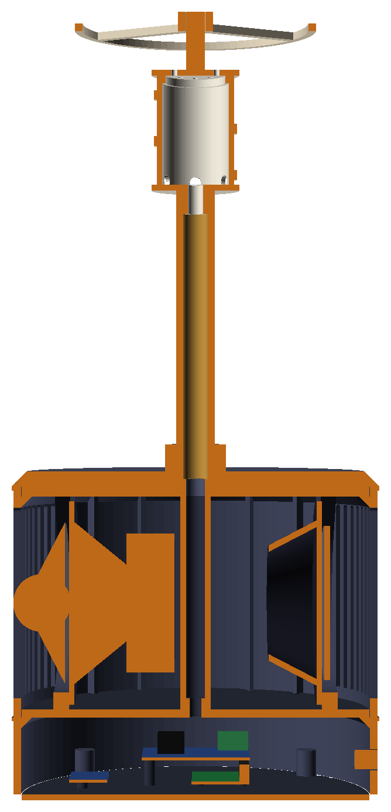

Design
Vier Schirme zur Auswahl
Alle Schirme werden aus transluzentem Filament im Vasenmodus gedruckt. Die Rippen streuen das Licht weich wie Riffelglas.

Plisseeklassischer Faltenschirm
Glockeweiches Licht nach untenKolbenbauchig wie Riffelglas

Twistgedrehte Rippen

Im Inneren
Durchdacht gebaut
- Lautsprecherkammer mit gut 2 l: Breitbänder vorne, Passivmembran hinten statt Bassreflexrohr. Mehr Bass, keine Strömungsgeräusche.
- Gedämmt und steif: 4 mm Wand, 8 Versteifungsrippen, Polyesterwatte und Alubutyl gegen Plastikklang.
- Elektronikfach im Boden: Raspberry Pi Zero 2 W mit Verstärker-Aufsatz und LED-Treiber.
- Lichtkern im Schirm: RGBW-LED-Streifen, spiralförmig gewickelt, Kabel durch den Messingstiel.
- Offen und anpassbar: Gehäuse in OpenSCAD, Software in Python, alle Teile auf normalen 3D-Druckern druckbar.